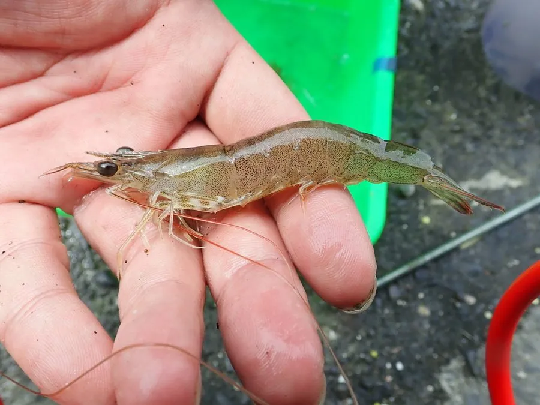

甲壳动物 · 动物界
刀额新对虾 Metapenaeus ensis

中国南方沿海常见的经济虾类，额剑呈刀状，体色浅黄带褐斑，是虾塘养殖和近海捕捞的重要品种，俗称沙虾。
- 分类
- 门节肢动物门纲软甲纲目十足目科对虾科属新对虾属
- 栖息环境
- 浅海和河口的沙泥底，喜欢盐度较低的水域
- 地理分布
- 中国东南沿海、日本和东南亚
- 保护级别
- IUCN 暂无评估；中国未列入国家重点保护名录
物种志
刀额新对虾体长 10–15 cm，额剑平直如刀，上缘有齿，体色浅黄或灰褐，散布褐色斑点，腹部各节有浅色横带；雄虾交接器明显，雌虾腹部较宽。
它分布于中国东南沿海、日本和东南亚的浅海与河口，栖息于沙泥底，昼伏夜出，杂食，取食底栖小动物、有机碎屑和藻类。刀额新对虾生长快、适应性强，是中国南方对虾养殖的重要品种，也是近海捕捞的常见虾类。它喜欢盐度较低的河口环境，雨季会向河口移动，成虾在浅海和河口之间洄游，雌虾一次可产卵数十万粒；它的额剑像一把小刀，是分类鉴定的重要特征。目前 IUCN 暂无评估；中国未列入国家重点保护名录，但养殖和捕捞需注意资源管理。
形态与习性
- 食性杂食，取食底栖小动物、有机碎屑和藻类
- 体长10–15 cm
- 识别额剑平直如刀，体色浅黄带褐斑
- 习性昼伏夜出，在浅海和河口间洄游
- 繁殖雌虾一次可产卵数十万粒
- 经济中国南方重要的养殖和捕捞虾类
趣味知识
- 刀额新对虾的额剑平直锋利，像一把小刀，名字由此而来。
- 它喜欢盐度较低的河口，雨季会成群向河口移动。
- 这种虾生长快、适应性强，是南方虾塘的常见养殖品种。